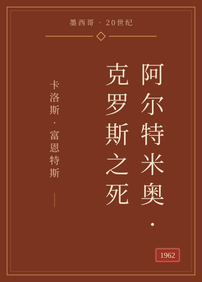
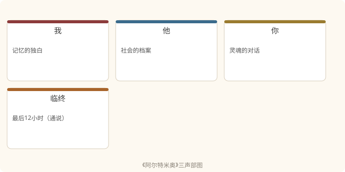

阿尔特米奥·克罗斯之死
一、基本信息
| 作者 | 卡洛斯·富恩特斯 |
|---|---|
| 成书/出版 | 1962年（Britannica：La muerte de Artemio Cruz (1962)） Carlos Fuentes — Encyclopaedia Britannica（百科全书） |
| 国别/地区 | 墨西哥 |
| 时代 | 现当代 · 20世纪 |
| 体裁 | 长篇小说 |
| 语言 | 西班牙语 |

《阿尔特米奥》三声部图（主题·结构图）
二、创作背景
Britannica（B287）：'La muerte de Artemio Cruz (1962; The Death of Artemio Cruz), which presents the agony of the last hours of a wealthy survivor of the Mexican Revolution'（写墨西哥革命幸存富人的最后时刻——B287）；'translated into several languages and established Fuentes as a major international novelist'（B287）。
作者（B287）：'undoubtedly one of the foremost Mexican writers of the 20th century'；1987塞万提斯奖。
三、内容脉络
垂死的阿尔特米奥·克罗斯的三声部回忆（我/他/你——通说待核）。
革命理想背叛者的忏悔与恐惧（通说待核）。
四、主要人物表
| 人物 | 身份 | 说明 |
|---|---|---|
| 阿尔特米奥·克罗斯 | 幸存富商 | （B287） |
五、主题与艺术特点
- 革命背叛者的临终（B287：agony of the last hours）。
- 三声部时序拼贴（通说待核）。
- 墨西哥身份的暴力起源（B287 语境：explored Mexican identity）。
六、影响与评论
- Britannica：'established Fuentes as a major international novelist'（B287）。
Carlos Fuentes — Encyclopaedia Britannica（百科全书） - Britannica：'undoubtedly one of the foremost Mexican writers of the 20th century'（B287）。
Carlos Fuentes — Encyclopaedia Britannica（百科全书）
七、阅读建议
难点
- 三声部人称切换。
- 墨西哥革命史。
- 《阿尔特米奥·克罗斯之死》（人民文学出版社/上海译文版本，通说待核）。
- 西班牙文原版（FCE）。
先《最明净的地区》后本作。
八、待核实
- 1962年出版（Fondo de Cultura Económica说）核对。
- 三声部结构（我/他/你——通说）核对。
- 临终日（1959年4月）细节待核。
本页主要来源
卡洛斯·富恩特斯的其他收录作品：阿尔特米奥·克罗斯之死